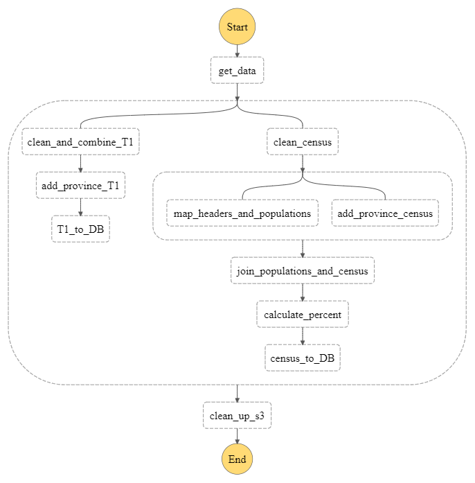

Backend Data ETL
All data was initially processed using a AWS Step Function running a sequence of AWS Lambdas.
Step Function Diagram

Step Function Descriptions
- The get_data function in AWS Lambda fetches the 2016 Census data from the Statistics Canada website and stores it in an Amazon S3 bucket.
- The clean_and_combine_T1 function in AWS Lambda takes the two provided T1 datasets (Donations by Family Type and Donations by Income Group) and combines them into one. Then, the combined dataset is filtered for 2016 data only, as the original datasets contained data from 2006 to 2018. This function also cleans the numerical columns, renames some columns for clarity, and drops unnecessary columns (for example, year after the data has been filtered for 2016, and place names).
- The add_province_T1 function in AWS Lambda adds a province column to the T1 dataset produced by clean_and_combine_T1. The province is determined based on the FSA. The dataset produced from this step is the fully processed T1 data, and is stored in JSON format in the Amazon S3 bucket.
- The T1_to_DB function in AWS Lambda takes the T1 dataset produced by add_province_T1 and puts it in Amazon DynamoDB, using the schema provided in Appendix A (Data Schema).
- The clean_census function in AWS Lambda takes the 2016 Census data fetched in get_data and performs various data cleaning functions. This includes renaming and removing various columns (such as year, repeated FSA columns, and footnote references), as well as removing some invalid values from numerical columns.
- The map_headers_and_populations function in AWS Lambda creates a file that maps the Census data categories to a broader collection designation (this is referred to as a header in the data). In addition, this file marks whether or not we want to keep specific categories in the data. It also creates a file that maps a category and an FSA to a total population of which the category value is a fraction of.
- The add_province_census function in AWS Lambda adds a province column to the Census dataset produced from clean_census. The province is determined based on the FSA.
- The join_populations_and_census function in AWS Lambda joins the Census dataset produced by add_province_census with the populations dataset produced by map_headers_and_populations, in preparation for the next step. It also combines the headers dataset created by map_headers_and_populations with the Census data. When we join with the headers dataset, undesired categories are filtered out of the census data.
- The calculate_percent function in AWS Lambda takes each row in the Census dataset produced by join_populations_and_census and calculates the category value as a percentage of the total population it is a fraction of. The dataset produced from this step is the fully processed Census data, and is stored in JSON format in the Amazon S3 bucket.
- The census_to_DB function in AWS Lambda takes the Census dataset produced by calculate_percent and puts it in Amazon DynamoDB, using the schema provided in Appendix A (Data Schema).
- The CleanUpS3 function in AWS Lambda removes all of the temporary datasets created by the previous steps from the Amazon S3 bucket. It does not delete the original datasets, nor the fully processed datasets produced from add_province_T1 and calculate_percent.
Datasets
- Census Data: The 2016 Census data contains various statistics from the Canadian Census, such as Age, Sex, Type of Dwelling, Families, Households, Marital Status, Language, Income, Immigration and Ethnocultural Diversity, Housing, Aboriginal Peoples, Education, Labour, Journey to Work, Mobility and Migration, and Language of Work for Canada and Forward Sortation Areas. Each statistic is aggregated by Forward Sortation Area (FSA). This data was obtained from the Statistics Canada website.
- T1 Donation Data by Family Type: The T1 Donation Data by Family Type contains data about the charitable donations made by different family types. This includes total amount donated, median donation amount, number of donations made, and donation rate. Each statistic is aggregated by Forward Sortation Area (FSA).
- T1 Donation Data by Income Group: The T1 Donation Data by Income Group contains data about the charitable donations made by different income groups. This includes total amount donated, median donation amount, number of donations made, and donation rate. Each statistic is aggregated by Forward Sortation Area (FSA).
Manual Data Processing
The file headers.csv in the data folder was created by copying the table from Statistics Canada into a spreadsheet in order to find the category groupings that were not otherwise represented in the Census data. After copying the table, the actual statistics were removed, and each category was marked with whether or not it would be kept for the app. Each category was numbered from 1 to 2247, corresponding to the ID given in the Census data (an ID was necessary as the categories do not have unique names). The file was then saved as a csv and used for further processing within the data preparation step function.